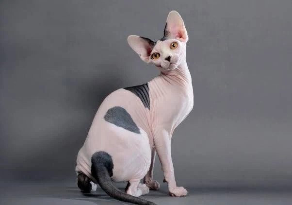
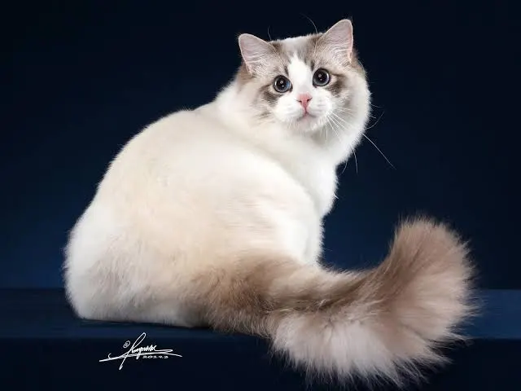
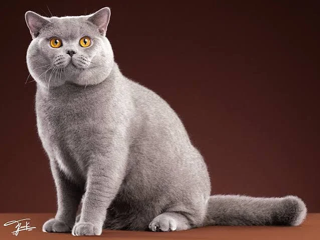

The Sphynx cat also known as the Canadian Sphynx, is a breed of cat known for its lack of fur. Hairlessness in cats is a naturally occurring genetic mutation, and the Sphynx was developed through selective breeding of these animals, starting in the 1960s..
Learn More
Sweetness shines forth in the mesmerizing gaze of a Rogdoll’s vivid blue eyes. Their laid-back, docile personalities, striking markings and easy-care coats have helped make these cats one of the world’s most popular breeds. Spend some time with one of these gentle, affectionate felines and you’ll easily soon understand why. All Ragdolls have the colorpoint gene, meaning that the body is always lighter in color than the head, legs and tail; three of the four Ragdoll patterns also have the bicolor gene, spicing up the pointed marking with dramatic white accents. They are not only beautiful to look at, but an utter delight to live with.
Learn More
Devotees of this robust, powerful breed often liken it to a teddy bear. Cuddly and comforting, the calm presence of a British Shorthair in the home means a welcoming “smile” for visitors and loyal, affectionate companionship for everyone in the house—mice, of course, excepted! This cat’s short, dense coat contains more hairs per square inch than any other breed, making it luxuriously rich to the touch yet easy to care for. With their sturdy, muscular builds, they are most comfortable keeping all four feet on the floor, so are highly unlikely to invade kitchen counters or endanger your good china..
Learn More